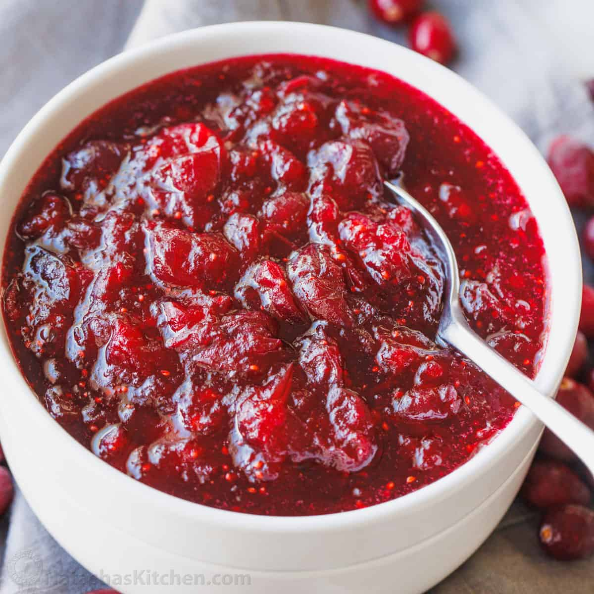

Super awesome Cranberry Sauce

Ingredients
- Cranberries [12 Ounces]: This is self-explantory! You can't make cranberry sauce without cranberries.
- Sugar [1 cup] This will add some sweetness to the sauce and also thicken it when it's heated.
- Orange Juice [1 cup] Cranberry Sauce needs a liquid base, but you can substitute this for pomegranate juice or red wine.
Steps
- Step 1: Dissolve the sugar in the orange juice(or the base of your choice) in a medium saucepan over medium heat.
- Step 2: Stir in the cranberries and let them cook until they start to pop, this should take about 10 minutes.
- Step 3: Remove the sauce from the heat and it should thicken as it cools.
- Step 4: Enjoy your delicious treat!